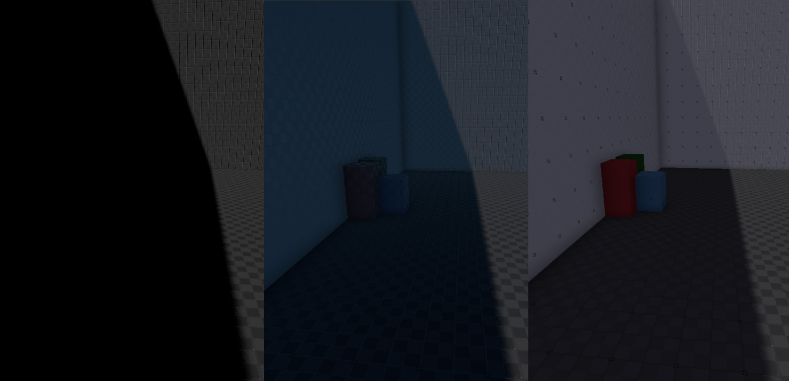

Ambient Light Component
The Ambient Light Component lights up all objects equally. It is used to ensure that no area of a level is ever entirely dark. The component uses two colors, one for light coming from the sky (top down) and one for light coming from the ground (bottom up). Usually the top color should be slightly brighter and the bottom color should represent the top color as it would appear after being bounced off the ground. Both colors and the overall intensity should be kept low, otherwise the colors in the scene will appear washed out due to missing contrast.
The image below shows a scene without any indirect light on the left, with a skylight in the middle and with ambient light on the right.

Ambient light should be used sparingly. Prefer to use directional light components for the main sky and sun light contributions. You can even use multiple directional light components (without shadows and low intensity) to fake ambient light but with more directionality, ie. by having each directional light shine from roughly the same direction, to add some variation.
Instead of ambient light, you could also use a sky light component. The effects of the Skylight will override the Ambient Light
Component Properties
TopColor: The ambient light coming from above. This is used to illuminate polygons that are facing the sky.BottomColor: The ambient light coming from below. This is used to illuminate polygons that are facing the ground.Intensity: The overall light intensity.